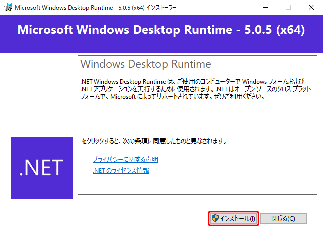

概要
腸蠕動音の解析を補助するソフトウェアです。
動作条件
Windows 10
Python3.7と各パッケージ
ファイル構成
| BowelSoundAnalyzer.exe | 実行ファイル |
| 説明書.htmlとimgフォルダ | 説明書用ファイル |
インストールの手順
本ソフトウェアを使用する前に、前提となるソフトウェアをインストールする必要があります。
そのため、前提ソフトウェアインストールの手順を以下の説明で表し、その操作を支援するソフトウェア「InstallSupporter.exe」（以下、支援ソフトウェアと表記）を同梱しています。
1番と2番に関しては直接Webサイトにアクセスしても構いませんが、3番の「Python3.7の初期設定」はこのソフトウェアから行ってください。
支援ソフトウェア「InstallSupporter.exe」
この支援ソフトウェアでは、
- .Net 5のインストール
- Python3.7のインストール
- Python3.7の初期設定
をそれぞれ行うことができます。以下の手順にしたがい、1から順番にボタンをクリックしてください。
.Net 5
- こちらのWebサイトにアクセスします。
- 「Download .NET Runtime」をクリックします。
- 「Download x64」をクリックします。
- ダウンロードが始まるので、「名前を付けて保存」します。
- ダウンロードしたファイルを実行します。
- 「インストール」をクリックします。 
- 「閉じる」をクリックして、インストールを終了します。


Python3.7
- こちらのWebサイトにアクセスします。
- 「Windows x86-64 executable installer」をクリックし、「名前を付けて保存」します。
- ダウンロードしたファイルを実行します。
- 「Add Python 3.7 to PATH」にチェックを入れてから、「Install Now」をクリックします。
- 「Close」をクリックして、インストールを終了します。
- 支援ソフトウェアの「3: Python3.7の初期設定」をクリックします。
- 自動で初期設定が行われます。以下のメッセージが表示されたら完了です。
- BowelSoundAnalyzerのフォルダを適当な場所に移動して実行してください。

アンインストール
BowelSoundAnalyzerのフォルダごと削除してください。
各機能について
各部の名称
詳細機能
メニューバー
クリックすることで、下にメニューが表示されます。
| 「開く」 | 音声ファイルを読み込みます。 [.wav]の拡張子に対応しています。 |
| 「画像として保存」 | 表示中のグラフのスクリーンショットを撮影し、画像として保存します。 |
| 「閉じる」 | 既に開いている音声ファイルを閉じます。 |
| 「終了」 | 本ソフトウェアを終了します。 |
操作タブ
音声の再生やグラフの操作方法の変更などさまざまな操作を行います。
ボタン上にマウスカーソルを重ねると、簡単なヘルプを表示します。
| 再生 | 音声を再生します。再生中に押すと一時停止します。 |
| 停止 | 音声を停止します。 |
| ループ再生 | 音声を最後まで流しても初めに戻り再生し続けます。 「有音区間のみ」選択中は選択中の有音区間がループ再生されます。 |
| ミュート設定 | ミュートのon/offを切り替えます。 |
| 音量設定 | PCの音量設定を変更します。 |
| 「グラフの拡大・縮小」 | グラフを拡大・縮小する操作のon/offを切り替えます。 |
| 「x軸グラフの外側まで表示する」 | グラフから音声ファイルの長さをはみ出る部分まで表示可能にします。 |
| 「y軸方向の移動と拡大・縮小」 | x軸方向だけでなく、y軸方向も移動や拡大・縮小の操作が可能になります。 |
| 「グリッド線の表示」 | グラフ上にグリッド線を表示します。 |
| 「シークバーにグラフを追従」 | 未実装です |
| 「波形表示」 | 波形グラフを表示します。 |
| 「スペクトログラム表示」 | スペクトログラムを表示します。 |
| 「波形の色」 | 波形グラフの色を設定します。 |
| 「ノイズ区間の色」 | 波形グラフ上に表示されたノイズ区間の色を設定します。 |
| 「スペクトログラムの色」 | スペクトログラムの色を約20種類の中から設定します。 |
| 表示範囲のリセット | グラフの表示範囲を初期状態に戻します。 |
| グラフの表示範囲の設定 | 数値を入力して「Enter」キーを入力するか「変更」ボタンをクリックすることで、 グラフの表示範囲を設定します。 |
グラフ表示エリア
上側に波形、下側にスペクトログラムを表示します。
縦の赤線が再生時間を表し、波形グラフ内の薄い水色の区間（初期設定）がノイズ区間を表しています。

| マウス操作の方法 | |
|---|---|
| 左クリック | 音声の再生位置をクリックした位置に移動します。 |
| 右クリックドラッグ | ドラッグに合わせてグラフ全体を移動させます。 |
| マウスホイール | マウスカーソルの位置を中心にグラフの拡大・縮小を行います。 |
閾値設定
STE(Short Time Energy)のグラフを見ながら閾値を設定することができます。
| STEグラフ | STE(Short Time Energy)のグラフです。 赤線が閾値で、薄い水色の区間（初期設定）が閾値を超えた範囲です。 グラフ上をクリックすると閾値を変更できます。 |
| STEの閾値 | STE(Short Time Energy)の閾値を数値で入力します。 入力された値は、直ちに反映されます。 |
| 「変更」 | STEの閾値として設定した値を保存して、この設定画面を閉じます。 |
| 「キャンセル」 | STEの閾値の設定をキャンセルして、閾値を元に戻します。 |
腸蠕動音解析の流れ
- BowelSoundAnalyzer.exeをダブルクリックして実行します。
- 「ファイル」→「開く」から、音声ファイルを選択して読み込みます。
- グラフ上部の音声波形上に示された白色の領域がSTEの閾値を超えた範囲（有音区間）です。
- 「編集」→「閾値設定」からSTEのグラフを表示し、STEの閾値を設定します。クリックした場所が閾値になります。
- 「再生」ボタンをクリックすることで、有音区間の再生を行います。
- マウスドラッグやマウスホイール、表示範囲選択用へのテキスト入力でグラフの表示範囲を調整します。
※その他、詳細な仕様は、各機能についてをご覧ください。
FAQ
Windows 10のコンピュータを使用しているにも関わらずソフト起動時にエラーが出る。
本ソフトウェアを使用前に、ランタイムのインストールが必要です。詳しくは、こちらをご覧ください。
音声ファイル読み込み時にソフトが終了する、落ちる。
本ソフトウェアを使用前に、Pythonのインストールと設定が必要です。詳しくは、こちらをご覧ください。
音声の読み込み時間が長い、遅い。
音声の長さに比例して、読み込み時間が増加します。音声を短く区切ってから使用してください。
グラフの移動操作が重い、遅い。
音声の長さとコンピュータの性能によっては重くなります。数値入力で表示範囲を変更するようにしてください。
窓関数のサイズを設定したらソフトが強制終了した。
極端な値を設定すると、処理が重くなってしまいます。デフォルトの値に近い値に設定してください。
グラフを拡大して再生するとシークバー（赤線）が見えなくなる。
グラフをかなり拡大した状態にすると、シークバーが一瞬で通り過ぎてしまい見えなくなってしまいます。